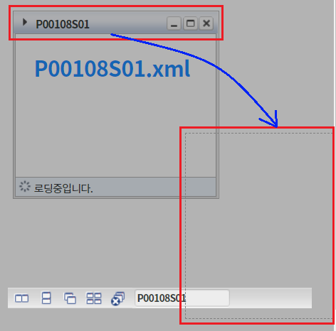
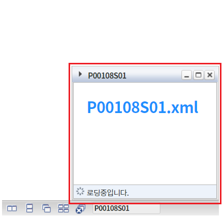
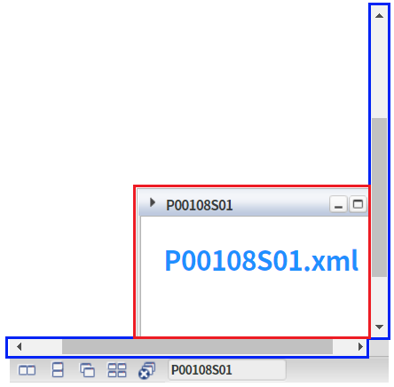
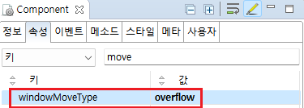

WindowContainer의 'windowMoveType' 속성을 사용하여, 마우스로 드래그한 윈도우가 위치될 범위를 설정한 예제입니다. 이 속성은 윈도우가 마우스로 드래그 앤 드롭을 통해 이동된 좌표가 WindowContainer의 영역 밖에 있는 경우 동작합니다. 설정에 따라 윈도우의 위치를 영역 안쪽으로 조정하거나 마우스 포인터의 좌표에 윈도우를 위치시킬 수 있습니다.
(기본 설정) windowMoveType="restrict"
windowMoveType="overflow"
각 예제 영역의 윈도우를 WindowContainer의 영역 밖으로 드래그 앤 드롭합니다. 윈도우가 위치되는 방식을 비교합니다.
예제 영역 '(기본 설정) windowMoveType="restrict"'에서 테스트합니다.1
STEP 1: 윈도우를 WindowContainer의 영역 밖으로 드래그 앤 드롭합니다.
Image 1.브라우저(Chrome) 실행 예시

2
STEP 2: 실행된 결과를 확인합니다.
윈도우가 WindowContainer 내부에 위치됩니다.
Image 2.브라우저(Chrome) 실행 예시

예제 영역 'windowMoveType="overflow"'에서 테스트합니다.1
STEP 1: 윈도우를 WindowContainer의 영역 밖으로 드래그 앤 드롭합니다.
Image 3.브라우저(Chrome) 실행 예시
2
STEP 2: 실행된 결과를 확인합니다.
WindowContainer에 스크롤이 생성되며 마우스 포인터 좌표를 기반으로 윈도우가 위치됩니다.
Image 4.브라우저(Chrome) 실행 예시

윈도우를 생성(추가)하는 스크립트는 생략되었습니다.
WindowContainer의 속성을 정의합니다.
[필수] windowMoveType="overflow"
[default:restrict, overflow] 윈도우 드래그시 영역밖으로 나갈때 동작 속성 지정.
Image 5.웹스퀘어 스튜디오의 Component View 예시

Example 1.Source
<!-- windowContainer 의 소스 본문 예시 --> <w2:windowContainer windowMoveType="overflow"> <!-- 중략 --> </w2:windowContainer>
windowMoveType